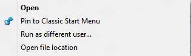

Note: 'Pin to Start Menu' is already built-in for Classic Shell 4.0 and later to pin EXE files and shortcuts. You do not really need to add this registry tweak for those versions for every day pinning of programs and shortcuts. However, this can be useful for users who are still using Classic Shell 3.6.x or earlier, or also for those users who want some extra pinning abilities to other folders besides the Start Menu folder. If you added Pin To Start Menu previously using this registry tweak, see the last post in this thread on how to remove it.
Short version:
1. Download PinToCSM.zip attached to this post
2. Copy both shellexecute.exe and makelink.exe to your Windows directory which is typically C:\Windows.
3. Double click the reg file to merge it.
You will get a nice "Pin to Classic Start Menu" item in right click menu with a nice icon. It works for multiple files at once as well and you can pin ANYthing - folders and any file by right clicking it.
To uninstall/remove this tweak, copy-paste the contents of the last post into a text file, save as .REG and merge that, then delete the makelink.exe and shellexecute.exe files.
Long version:
Classic Start Menu before 4.0 didn't support pinning from context menu. It was then that I wrote this tutorial to add pinning ability via the context menu. Classic Shell 4.0 added right click pinning feature for all .EXE files and .LNK files (shortcuts). Unfortunately, it works only for 1 file at a time and it doesn't work for folders or other file types. So this tutorial is still useful for those who want to pin many files at once or pin folders using right click.
We can of course drag and drop ANY item - whether it's a folder, file, or URL to the Start Menu folder area or directly paste them in %appdata%\Microsoft\Windows\Start Menu or %ProgramData%\Microsoft\Windows\Start Menu. However, this is not as convenient as pinning. Since pinning is the same thing as 1-click shortcut creation, I used a few free tools and a registry tweak to add "pinning" functionality:
1. Download PinToCSM.zip attached to this post and extract it somewhere. It contains makelink.exe, a freeware command line tool (whose website at
http://kerys.co.uk unfortunately went down but you will see by doing makelinkexe /? that it's freeware). And a reg file needed to add the command to the context menu.
2. Because it is a command line tool, when we pin it, it will show a console window. We don't want to view the console window every time we pin. So the ZIP file also includes ShellExecute.exe, which is a wrapper for the ShellExecute API (the built-in Windows API to run anything). It can run makelink.exe as a hidden command, so the console window is not shown.
3. Copy both shellexecute.exe and makelink.exe to your Windows directory which is typically C:\Windows. This step is only needed to add these 2 EXEs to the system path. (If you don't want to copy these to the Windows directory, you will need to edit the reg file to point the EXEs to the path where you put them, otherwise just copying them to %windir% is enough). Now double click the reg file.
That's all. Now you will get a nice "Pin to Classic Start Menu" item in your context menu for everything as the image shows. It works at a time on multiple files too, so pin away. The blue pin icon is loaded from imageres.dll on Windows 7 and Windows 8 (Vista users may need to adjust the icon in the reg file).
Let me know if it works for you.
Also, the makelink.exe tool is a very powerful tool. You can run makelink.exe /? to see the full CLIDL values for various folders and various other parameters. You can optionally edit the REG file to make it pin to another folder instead of the Start Menu folder, for example, the All Programs folder if you change the number after 'CSIDL:' in the reg file to 2 (which means All Programs).